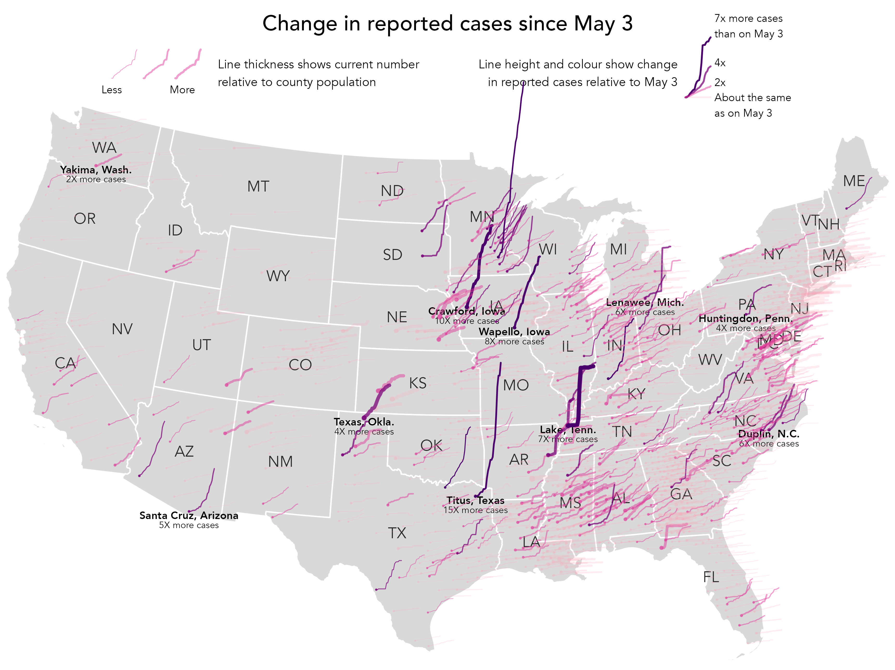

8 Data Storytelling
By the end of this chapter you should gain the following knowledge and practical skills.
Knowledge
Practical skills
8.1 Introduction
It is now taken-for-granted that we live in an evidence-based society in which data are deeply embedded in most domains and in how we approach the world’s problems. This recognition has coincided with the open source movement, which has freed up access and accelerated the development of tools for working with data. The response to Covid-19 is an excellent example. Enter Covid19 github into a search and you’ll be confronted with hundreds of code repositories demonstrating how data related to the pandemic can be collected, processed and analysed. This is exciting and feels very democratic. But there is a responsibility amongst those constructing and sharing evidence-based arguments to do so with integrity; navigating the difficult tension between communicating a clear message – necessarily reducing some of the complexity – at the same time as acknowledging uncertainty.
The role of narrative and storytelling when working with data is much discussed in Information Visualization (Henry-Riche et al. 2018) and Science Communication (Franconeri et al. 2022). Importantly, this work recognises that there is no single, optimal visualization design that exposes the true structure or story in a dataset. Instead, that careful design decisions must be made in light of data, audience and intended purpose.
In this chapter we will review some of this literature with a special focus on approaches to communicating data around the Covid-19 pandemic, specifically publicly reported numbers on cases, hospitalisations and deaths.
8.2 Concepts
8.2.1 Data-driven storytelling
In earlier chapters of the book (e.g. Chapter 3) we identified and explored some common characteristics of effective data graphics. Roth (2021) enumerates 10 such characteristics specialised to data storytelling. Particularly important for visualization design is that data graphics are:
Designed: The analyst makes very deliberate decisions in light of audience and purpose. The goal of visual storytelling is not just to show but also to explain.
Partial: Essential information is prioritised and made salient, with abstraction and brevity preferred over complexity and completeness.
Intuitive: Visual narratives take advantage of our natural tendency to communicate via metaphor and story, with a clear entry point and clear progression.
Compelling: Visual stories often capture attention through an array of graphical devices – sequence, animation and interaction. They generate an aesthetic response.
Relatable and situated: Visual stories promote empathy, using devices that place the audience in the story setting. They are usually constructed from somewhere – according to a particular position.
Political: Visual data stories promote with clarity particular voices, interpretations or positions.
In the sections that follow, we review some prominent Covid-19 visualizations and reflect on how they implement these sorts of storytelling devices.
8.2.2 Designed and partial
Perhaps the most high-profile example of data graphics specialised to communication were those produced by the Financial Times (Financial Times 2020). Figure 8.1 displays one such example, the Financial Times’s Covid-19 trajectory tracker. Along the y-axis are cumulative numbers of deaths represented using a log-scale; and along the x-axis, the number of days that elapsed since some threshold number of deaths was recorded.
We can evaluate the graphic using some of the principles introduced in Chapter 3. In its use of position on an aligned scale to encode death counts, colour hue to differentiate countries and lines to connect daily counts, the graphic’s visual encoding exploits our cognitive abilities. The graphic also makes appropriate use of superimposition to support comparison (Gleicher and Roberts 2011) – lines for each country represented on the same coordinate space.
On Roth (2021)’s characteristics of visual storytelling, it is clear that the graphic is designed with a very deliberate purpose:
- Between country comparison: Are countries on the same course?
- Comparison against milestone: How many days does it take a certain county to reach a given number of deaths?
It is possible to see each of these goals informing the graphic. Comparison between countries is most obviously supported by the use of a log-scale. This data transformation removes the dominant, hockey-stick type pattern inevitable when analysing disease growth (e.g. exponential doubling) and instead allows slopes, growth rates, to be compared directly. Log scales are, though, not so familiar to the average reader. Annotations are therefore provided to anchor the reader on reference slope gradients (growth rates), again narrowing on the essential goal of between country comparison. Notice also that there are no legends in this chart. Countries are differentiated with colour hue and then directly-labelled at their most recent death count, an addition that offloads an otherwise taxing look-up task, but also serves to emphasise a country’s ‘stage’ in the pandemic.
Note
A design alternative that supports between country comparison is Bhatia and Reich (2020)’s Covid Trends chart (Figure 8.2). In this example, a double log scale is used and growth rates in new cases are presented on the y-axis with total case numbers, rather than time elapsed, plotted along the x-axis. Whilst the introduction of a double log scale might be judged to increase difficulty, actually this design narrows or simplifies the reader’s visual judgement to looking at the thing that we are most interested in: comparison of country growth rates against the two day doubling (annotated with the diagonal). The chart is also accompanied with an excellent explanatory video1, in which many of the characteristics of visual data stories enumerated by Roth (2021) can be identified.

8.2.3 Intuitive and compelling
Visual data stories are often explanatory (Roth 2021). They make compelling use of graphical and rhetorical devices to support understanding. This is especially important in data-driven storytelling as it often involves concepts that are initially quite challenging. In Figure 8.3 is a static image from a data story written by Flourish2 (Lawlor and Robertson 2021) based on design work by Marteen Lambrechts. The data story is essentially a design exposition (Beecham et al. 2020; Wood, Kachkaev, and Dykes 2018), guiding readers from the familiar to the unfamiliar. First a standard time series chart of hospitalisations and deaths is presented. Deficiencies in this layout are explained before progressively introducing the transformations involved to generate the preferred graphic, a connected scatterplot (Haroz, Kosara, and Franconeri 2016). Ordering the story in this way explains design decisions and trade-offs from a familiar starting point and helps justify new, sometimes unfamiliar encodings. Thinking about Roth (2021)’s characteristics of visual storytelling, formulating a design story in this way helps build intuition – there is a clear entry point and clear progression.

Note
For an example of guided design exposition, see Beecham et al. (2021) which develops ways of showing simultaneously absolute and relative change in cases, with geographic context.
Animations in data graphics can increase engagement and aesthetic appeal. They can also overwhelm since they involve complex tracking of information between frames (Franconeri et al. 2022). An example of how animation can be used selectively to build intuition is demonstrated in Figure 8.4, again from Financial Times (Financial Times 2021). The main objective is to demonstrate how different 2020-21 is in terms of admissions to intensive care compared to a normal year. This was in response to claims that Covid-19 behaves much like seasonal flu; to this extent the graphic is also quite political. Each year from 2013-14 is added to the chart and the y-axis rescaled to reflect the new numbers. The animated transitions of the y-axis help build expectation around normal variability in a similar way to hypothetical outcome plots (Hullman, Resnick, and Adar 2015), covered in the previous chapter. The claim that the 2020-21 flu season is consistent with normal variability is then debunked by the introduction of the 2020-21 line in red, with animated rescaling of the y-axis used to further emphasise this point.

8.2.4 Political
Figure 8.5 presents a final example from Financial Times (Burn-Murdoch 2021) with an obviously political purpose. The graphic was created in response to some claims that it is movement restrictions (lockdowns) rather than vaccination that reduced infection rates in the country.

Interesting here is how annotation and visual saliency is used to direct our reading. If the graphic was only annotated with points in time when lockdown and vaccination was initiated, it might invite judgements about the effects of these two events on infectious rates. That the graphic makes highly salient annotations labelling the (unmeasurable) effect of the vaccine is an interesting addition. There is little room for ambiguity.
This sort of presentation, labelling the chart with an unmeasurable vaccine effect, may risk graphical integrity. In a keynote given at IEEE VIS 2020, John Burn-Murdoch (2020), who created this and the other Financial Times graphics, reflected on his experiences generating data stories early in the pandemic. One observation was that the way in which the Financial Times’s data graphics were interpreted, and misinterpreted, varied depending on the prior expectations and political beliefs of those consuming them. The chart labelling in this case might have been added to signal more directly the evidence-based argument that was being made – to amplify a particular conclusion supported by the data.
Clearly all data analysis is heavily informed by the values, prejudices, motivations and incentives of those undertaking them. As demonstrated by Roth (2021)’s characteristics of data storytelling, these individual factors are necessary to communicate effectively. An interesting question, then, is around how integrity and trust is designed into a data analysis. Perhaps in the case of the Financial Times data journalists, this trust is established over time, through a portfolio of data analysis work that is considered, communicated transparently and with humility.
Note
The annotations in Figure 8.5 have heavy saliency thanks to the parsimonious use of axis titles, marks and legends, and other non-data-ink (Tufte 1983).
8.3 Techniques
The technical element demonstrates how to design plots deliberatively with annotations in ggplot2. We will recreate a glyphmap type graphic that originally appeared in The Washington Post3 (Thebault and Hauslohner 2020) to tell a story of growth in Covid-19 cases by US county. The graphic is presented in Figure 8.6. Each US county is represented as a line encoded by daily growth rates in new cases between 3rd May and 26th May 2020. Lines are positioned at the geographic centre of each county.

Figure 8.6 is certainly data dense. Without careful decisions on which aspects to emphasise it would be quite unreadable. Line thickness is varied according to relative infection rates (cumulative cases/population size) and growth rate is double encoded with colour value – darker and steeper lines for higher growth rates. Even with these additions it is challenging to discern trajectories for every county, but instead a typical model or expectation of these trajectories can be learnt from visually scanning the graphic. That there is spatial autocorrelation in trajectories means an overall pattern of exposure can be inferred, before eyes are drawn to exceptions. Initially these are towards the extreme end: tall, steep, dark and thick lines suggesting rapid growth rates and high case rates. Secondary patterns can also be discerned, for example thick and mid-dark lines surrounded by lines that are generally lighter and thinner: counties that appear locally exceptional in having comparatively high growth and exposure rates.
The design is impressive, and there is an obvious benefit to showing growth rates in their spatial position. However, we are not looking at absolute numbers here. The counties that are most salient are not those with the largest case counts. Rather, they have experienced rapid growth since the number of cases reported on 3rd May. So the graphic is most certainly partial and designed to suit a particular purpose. A slight adjustment in the implementation in Figure 8.6 was to only show growth rates for counties that had non-negligible case counts on 3rd May (\geq20 cases).
Without the careful integration of annotations and non-standard legends, Figure 8.6 would not be so successful. The aim of this technical section is to demonstrate an approach to generating heavily designed annotations – custom legends, which are often necessary when communicating with maps. For more extensive demonstration of how charts can be annotated and refined, do see the Further Reading section of this chapter.
8.3.1 Import
- Download the 08-template.qmd file and save it to your
vis4sdsproject. - Open your
vis4sdsproject in RStudio and load the template file by clickingFile>Open File ...>08-template.qmd.
The template file lists the required packages – tidyverse and sf. The data were collected using the covdata package (Healy 2020), attributing the county-level cumulative cases dataset maintained by data journalists at The New York Times (2021).
The template provides access to a version of this dataset that is ‘staged’ for charting. For this cases are filtered on the dates covered by the Washington Post graphic (3rd to 25th May); counties whose daily case counts were \geq20 cases on 3rd May are identified; calculated daily growth rates are anchored to case counts on 3rd May; calculated ‘end’ growth rates and daily counts for each county are calculated (those recorded on 25th May); and finally a binned growth rate variable identifying counties with daily case counts on 25rd May that were \leq2\times, \geq2\times, \geq4\times, \geq7\times the daily case counts measured on 3rd May. Also there is a state_boundaries dataset to download, which contains geometry data for each US state, collected from US Census Bureau as well as coordinate variables describing the geographic centroid of each state. The Albers Equal Area projection is used.
8.3.2 Plot trajectories
The main graphic is reasonably straightforward to construct. Different from many of the data graphics in earlier chapters, the way in which growth lines are generated is somewhat low-level. Remembering that lines are initially positioned in x- and y- on their county centroid, we generate from the data positions in geographic space for each observation – growth rates recorded by day since 3rd May 2020.
The code:
county_data |>
ggplot() +
geom_sf(
data=state_boundaries,
fill="#eeeeee", colour="#ffffff", linewidth=0.4
)+
coord_sf(crs=5070, datum=NA, clip="off") +
geom_point(
data=.%>% filter(date=="2020-05-03"),
aes(
x=x, y=y, size=case_rate, alpha=binned_growth_rate,
colour=binned_growth_rate
)
) +
# Plot case data.
geom_path(
aes(
x=x+((day_num-1)*6000), y=y+((growth_rate-1)*50000),
group=fips, linewidth=case_rate, alpha=binned_growth_rate,
colour=binned_growth_rate),
lineend="round"
) +
scale_colour_manual(
values=c("#fa9fb5", "#dd3497", "#7a0177", "#49006a")
) +
scale_size(range=c(.1,1.5)) +
scale_linewidth(range=c(.3,3)) +
scale_alpha_ordinal(range=c(.2,1)) +
guides(colour="none", size="none", alpha="none") +
theme_void()The plot specification:
-
Data: The main dataset – the staged
county_datafile. Separately there is astate_boundariesfile used to draw state boundaries and later label states. For the points drawn at the centroid of each US county (geom_point()), the data are filtered so that only a single day is represented (filter(date=="2020-05-03")). -
Encoding: For
geom_point(), x-position and y-position is mapped to county centroid (x,yvariables incounty_data), points are coloured according tobinned_growth_rateusing bothcolourandalphaand sized according to that county’scase_rate. The same colour and size encoding is used for the lines (geom_path()). County lines are again anchored at county centroids but offset inxaccording to time elapsed (day_num) and inyaccording togrowth_rate. The constants applied togrowth_rate(5000) andday_num(6000), which control the space occupied by the lines, was arrived at manually through trial and error. Note that these numbers are large as they relate to geographic coordinate space. In order to draw separate lines for each county, we set thegroup=argument to the county identifier variablefips. -
Marks:
geom_point()for the start points centred on county centroids andgeom_path()for the lines. -
Scale:
scale_colour_manual()for the binned growth rate colours;scale_alpha()for an ordinal transparency range – the floor for this is 0.2 and not 0, otherwise counties with the smallest binned growth rates would not be visible;scale_size()andscale_linewidth_size()for varying the size of points and thickness of lines continuously according to case rate, the range was arrived at through trial and error. -
Setting: We don’t want the default legend to appear and so
guides()turns these off; additionallytheme_void()for removing default axes, gridlines etc.
8.3.3 Add labels and annotations
The two-letter state boundaries, held in the state_boundaries file can be added in a geom_text() layer, positioned in x and y at state centroids. For obvious reasons this needs to appear after the first call to geom_sf(), which draws the filled state outlines:
county_data |>
ggplot()+
ggplot() +
geom_sf(
data=state_boundaries,
fill="#eeeeee", colour="#ffffff", linewidth=0.4
)+
geom_text(data=state_boundaries, aes(x=x,y=y,label=STUSPS), alpha=.8)+
...
...
...For the counties annotated with accompanying growth rates we create a staged, filtered data frame containing only those counties and with just one row for each county. This is a little more tedious as we have to manually identify these in a filter(). Note that we filter on date first, so that only one row is returned for each county. Within the mutate() some manual abbreviations are made for state names and also the end_rate variable is rounded to whole numbers for better labelling.
# Counties to annotate.
annotate <- county_data |>
filter(
date=="2020-05-03",
county==c("Huntingdon") & state=="Pennsylvania" |
county==c("Lenawee") & state=="Michigan" |
county==c("Crawford") & state=="Iowa" |
county==c("Wapello") & state=="Iowa" |
county==c("Lake") & state=="Tennessee" |
county=="Texas" & state == c("Oklahoma") |
county==c("Duplin") & state=="North Carolina" |
county==c("Santa Cruz") & state=="Arizona"|
county==c("Titus") & state=="Texas"|
county==c("Yakima") & state=="Washington"
) |>
mutate(
state_abbr=case_when(
state=="Pennsylvania" ~ "Penn.",
state=="Iowa" ~ "Iowa",
state=="Tennessee" ~ "Tenn.",
state=="Oklahoma" ~ "Okla.",
state=="Texas" ~ "Texas",
state=="North Carolina" ~ "N.C.",
state=="Washington" ~ "Wash.",
state=="Michigan" ~ "Mich.",
state=="Arizona" ~ "Arizona",
TRUE ~ ""),
end_rate_round = round(end_rate,0)
)Plotting these is again quite straightforward with geom_text(). The paste0() function is used to build labels that display conty names (county) and then state abbreviations (state_abbr). These appear below each county and this is effected by offseting y-position. Additionally the counties are given a bold font by passing an argument to fontface="bold". The same approach is used for the rate labels, but with an incremented y-position offset so that they don’t overlap the county name labels.
county_data |>
ggplot()+
geom_sf(data=state_boundaries, fill="#eeeeee", colour="#ffffff", linewidth=0.4)+
...
...
geom_text(
data=annotate,
aes(x=x,y=y-20000,label=paste0(county,", ",state_abbr)),
size=3, fontface="bold"
)+
geom_text(
data=annotate,
aes(x=x,y=y-65000,label=paste0(end_rate_round,"X more cases")),
size=2.5
)+
...
...
...8.3.4 Build custom legend
Since Figure 8.6 is a custom data graphic coded in a somewhat low-level way with geom_segment(), it is useful to accompany it with a more expressive legend. We therefore build our own legend from scratch, using the geographic space of the plot as our canvas.


To support positioning of the legend we extract the spatial limits, or bounding box, of our plot area – the mainland US.
# Bounding box for mainland US.
bbox <- st_bbox(state_boundaries)
width <- bbox$xmax-bbox$xmin
height <- bbox$ymax-bbox$yminWe then create a dataset for the top right legend displaying the different categories of growth rate – Figure 8.8 (a). Counties filtered by their different growth rates were identified manually. As you will see shortly we use exactly the same encoding as the main graphic for the example legend lines, but rather than positioning these selected counties in their real geographic position, we override their x- and y- location so that the lines appear in a margin to the top right of the graphic. This is achieved in the mutate(), where we set x-position to start at the right quarter of the graphic (bbox$xmax-.25*width) and y-position to start slightly above the top of the graphic bbox$ymax+.05*height. case_rate is set to a constant as we don’t want line width to vary and also a manually created label variable.
# Legend : growth
legend_growth <- county_data |>
filter(
county=="Dubois" & state=="Indiana" |
county=="Androscoggin" & state=="Maine" |
county=="Fairfax" & state=="Virginia" |
county=="Bledsoe" & state=="Tennessee"
) |>
mutate(
x=bbox$xmax-.25*width, y=bbox$ymax+.05*height,
case_rate=.01,
label=case_when(
county == "Dubois" ~ "7x more cases than on May 3",
county == "Androscoggin" ~ "4x",
county == "Fairfax" ~ "2x",
county == "Bledsoe" ~ "About the same as on May 3"
)
)A separate dataset is also created for drawing the top left legend – Figure 8.8 (b), showing different case rates relative to population size. In the mutate() we set x-position to start towards the left of the graphic (bbox$xmax-.88*width) and y-position to start slightly above the top of the graphic bbox$ymax+.05*height. We want to draw three lines corresponding to a low, medium and high growth rate and so pivot_longer() to duplicate the daily case data over rows. Each line needs to be drawn next to one another and this is achieved with the offset_day variable, a multiple applied to the geographic width of US used later in the ggplot2 specification.
# Legend : case
legend_case <- county_data |>
filter(county == "Kings" & state=="California" ) |>
mutate(
x=bbox$xmax-.88*width,y=bbox$ymax+.05*height,
binned_growth_rate=factor(binned_growth_rate)
) %>%
select(x, y, day_num, growth_rate, binned_growth_rate, fips) |>
mutate(low=.001, mid=.009, high=.015) |>
pivot_longer(
cols=c(low, mid, high), names_to="offset", values_to="offset_rate"
) |>
mutate(
offset_day= case_when(
offset == "low" ~ 0,
offset == "mid" ~ .04,
offset == "high" ~ .08
)
)8.3.5 Compose graphic
The code block below demonstrates how derived data for the legends are used in the ggplot2 specification. Exactly the same mappings are used in the legend as the main graphic, and so the call to geom_path() looks similar, except for the different use of x- and y- position. Labels for the legends are generated using annotate() and again positioned using location information contained in bbox.
# Text for annotations and titles.
growth_text <- "Line height and colour show change in reported cases
relative to May 3"
case_text <- "Line thickness shows current number relative to
county population"
title_text <- "Change in reported cases since May 3"
county_data |>
ggplot()+
geom_sf(data=state_boundaries, fill="#eeeeee", colour="#bcbcbc", linewidth=0.4)+
...
...
...
# Plot growth legend lines.
geom_path(
data=legend_growth,
aes(x=x+((day_num-1)*6000), y=y+((growth_rate-1)*50000),
group=fips, linewidth=case_rate, alpha=binned_growth_rate, colour=binned_growth_rate),
lineend="round"
) +
# Text label for growth legend lines.
geom_text(
# For positioning manually edit growth_rate of Bledsoe.
data=legend_growth %>% filter(day_num == max(county_data$day_num)) %>%
mutate(growth_rate=if_else(county=="Bledsoe", -1,growth_rate)),
aes(x=x+(day_num*6000)+10000,y=y+((growth_rate-1)*50000),
label=str_wrap(label, 15)),
size=2.5
)+
annotate("text",
x=bbox$xmax-.25*width, y=bbox$ymax+.08*height,
label=str_wrap(growth_text,35), size=3.5, hjust=1
)+
# Plot case legend lines.
geom_path(
data=legend_case,
aes(x=x+((day_num-1)*6000)+offset_day*width, y=y+((growth_rate-1)*50000),
group=paste0(fips,offset), linewidth=offset_rate,
alpha=binned_growth_rate, colour=binned_growth_rate),
lineend="round"
) +
# Text label for case legend lines.
annotate("text",
x=bbox$xmax-.88*width, y=bbox$ymax+.04*height, label="Less", size=2.5
)+
annotate("text",
x=bbox$xmax-.8*width, y=bbox$ymax+.04*height, label="More", size=2.5
)+
annotate("text",
x=bbox$xmax-.75*width, y=bbox$ymax+.08*height,
label=str_wrap(case_text,35), size=3.5, hjust=0
)+
# Title.
annotate("text",
x=bbox$xmax-.5*width, y=bbox$ymax+.15*height,
label=title_text, size=5
)+
...
...
...8.4 Conclusions
Communicating effectively with data is not an easy undertaking. Difficult decisions must be made around how much detail to sacrifice in favour of clarity and simplicity of message. Visual approaches can help here, giving cues that order and prioritise information and that build explanatory narratives using metaphor and other rhetorical devices. There are stellar examples of this from in-house data journalism teams, most obviously in recent evidence-based stories around the Covid-19 pandemic. We have considered some of these and the careful design decisions made when communicating data-driven stories in light of data, audience and intended purpose. Many data journalists use ggplot2 as their visualization toolkit of choice and in the technical section we demonstrated how more designed graphics can be generated. This somewhat fiddly approach to creating graphics is different from the style of workflow envisaged in Chapter 3 and Chapter 4 on exploratory visual analysis. However, as demonstrated through the examples in this chapter and the book more generally, ggplot2 can be used for this more deliberative visualization design, making control over annotations, text labels and embedded graphics useful skills to develop.
8.5 Further Reading
Cédric Scherer’s excellent workshop at posit::conf(2023). Highly recommended as a resource for covering in a methodical way how to parameterise ggplot2 scales, coordinate systems, facets, annotation and labelling.
- Cédric Scherer, 2023. “Designing Data Visualizations to Successfully Tell a Story”, A posit::conf(2023) Workshop, posit-conf-2023.github.io/dataviz-storytelling/
For a similarly excellent resource see:
- Kieran Healy, 2019. “Data Visualization: A Practical Introduction”. Princeton University Press.
- Chapter 8
Data journalists at the BBC have assembled a useful ‘cookbook’ demonstrating basic but useful edits to standard ggplot2 graphics.
- BBC, 2019. “BBC Visual and Data Journalism cookbook for R graphics”, bbc.github.io/rcookbook/
High-level but principled description of how to incorporate annotations, customise scales and legends when generating plots for communication.
- Wickham, H., Çetinkaya-Rundel, M., Grolemund, G. 2023, “R for Data Science, 2nd Edition”, O’Rielly.
- Chapter 12.